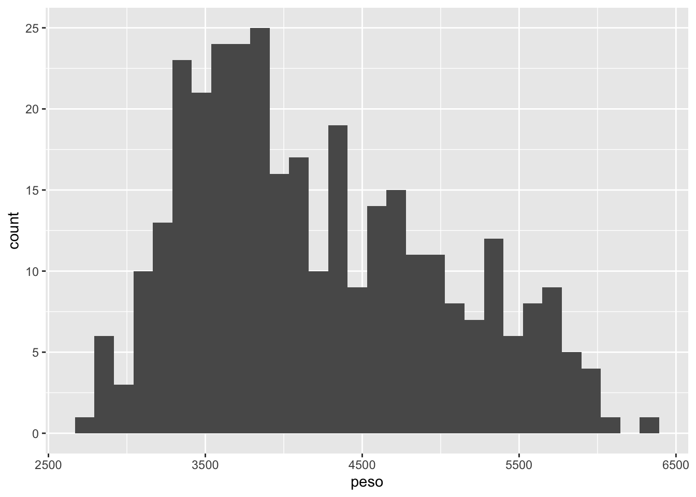
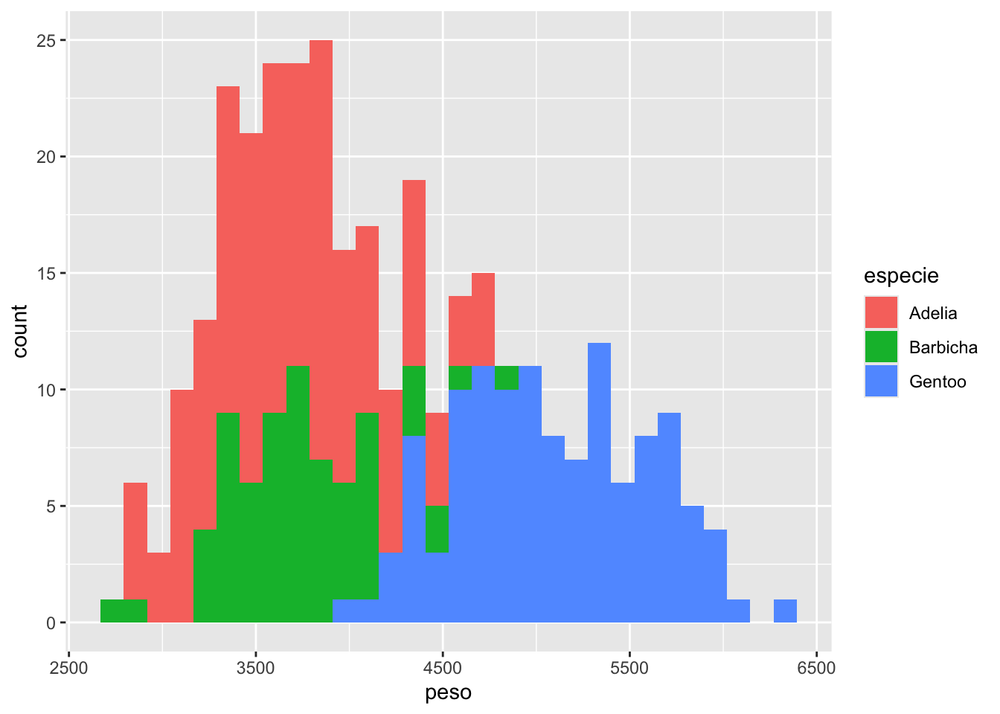
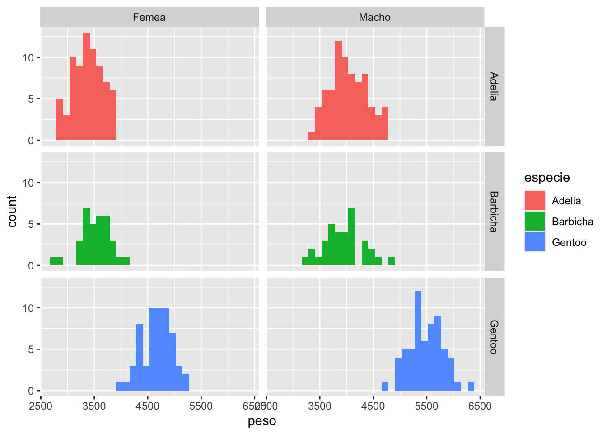
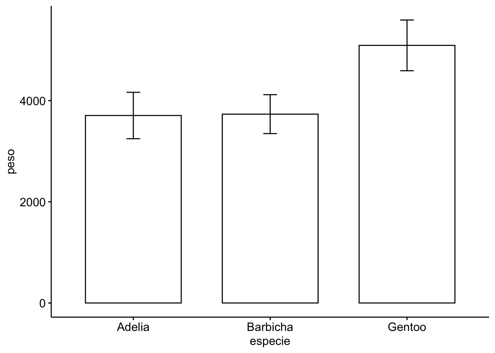

#primeiramente, definir diretório de trabalho com setwd()
library(readxl) #carregar pacote readxl
pinguins <- read_excel("dados_R.xlsx", sheet = "pinguins")
head(pinguins)# observar as primeiras linhas
str(pinguins) #observar a estrutura do objeto
summary(pinguins) #estatísticas sumárias do objeto6 Gráficos e análise exploratória de dados
6.1 Análise exploratória de dados
O conceito de análise exploratória de dados (Exploratory Data Analysis - EDA) foi introduzido por John Tuckey, e enfatiza estratégias de entender os dados por meio de observação de estatísticas descritivas e exploração gráfica Ellison (2001). Neste tópico, vamos aplicar algumas dessas ferramentas em uma planilha de dados. Neste script, introduziremos alguns instrumentos de EDA e elaboração de gráficos.
Primeiramente, lembrem-se de criar um novo diretório (pasta), colocar as planilhas que serão importadas nele e defini-lo como diretório de trabalho com setwd().
Vamos utilizar novamente a planilha pinguins. Dê uma visualizada geral para lembrar dela:
Podemos calcular estatísticas descritivas como visto na aula anterior (Tabela 6.1). Nesse exemplo, a fórmula foi simplificada:
Somente foram incluídas as colunas de interesse no argumento
data = pinguins[,c(1,3:6)]. Desta forma selecionamos as colunas 1, 3, 4, 5 e 6, que representam a variével espécie e as variáveis numéricas;A fórmula foi apresentada como
~ . | especie. O ponto indica que vamos incluir todas as variáveis dos nossos dados agrupadas por espécie.
#install.packages("table1") #caso não tenha sido instalado
library(table1) # carregar o pacote
#criar tabela com estatísticas descritivas para todas as variáveis numéricas
table1(~ . | especie, data = pinguins[,c(1,3:6)])| Adelia (N=146) |
Barbicha (N=68) |
Gentoo (N=119) |
Overall (N=333) |
|
|---|---|---|---|---|
| bico_comp | ||||
| Mean (SD) | 38.8 (2.66) | 48.8 (3.34) | 47.6 (3.11) | 44.0 (5.47) |
| Median [Min, Max] | 38.9 [32.1, 46.0] | 49.6 [40.9, 58.0] | 47.4 [40.9, 59.6] | 44.5 [32.1, 59.6] |
| bico_prof | ||||
| Mean (SD) | 18.3 (1.22) | 18.4 (1.14) | 15.0 (0.986) | 17.2 (1.97) |
| Median [Min, Max] | 18.4 [15.5, 21.5] | 18.5 [16.4, 20.8] | 15.0 [13.1, 17.3] | 17.3 [13.1, 21.5] |
| nadadeira | ||||
| Mean (SD) | 190 (6.52) | 196 (7.13) | 217 (6.59) | 201 (14.0) |
| Median [Min, Max] | 190 [172, 210] | 196 [178, 212] | 216 [203, 231] | 197 [172, 231] |
| peso | ||||
| Mean (SD) | 3710 (459) | 3730 (384) | 5090 (501) | 4210 (805) |
| Median [Min, Max] | 3700 [2850, 4780] | 3700 [2700, 4800] | 5050 [3950, 6300] | 4050 [2700, 6300] |
6.2 Gráficos
O objetivo deste tópico é introduzir o ambiente gráfico do R, e compreender suas principais funções.
6.2.1 Função plot: preparando gráficos de dispersão (scatterplots)
Podemos verificar se há alguma relação antre o comprimento do bico (bico_comp) e a profundidade do bico (bico_prof) com a função plot() (Figura 6.1)
plot(bico_comp ~ bico_prof, data = pinguins)6.2.1.1 Argumentos
A função plot() apresenta diversos argumentos que podem ser utilizados para fazer modificações nos gráficos. Para observar a ajuda para esses parâmetros, observe as ajudas da função plot() e par(). Podemos por exemplo, mudar o formato dos pontos com o argumento pch, e a cor com col.
A função colors() mostra as cores disponíveis. Para ver os tipos de pontos disponíveis (Figura 6.2).
#usar install.packages("ggpubr") #para instalar o pacote
ggpubr::show_point_shapes() # mostra os tipos de pontos disponíveis para o argumento pch.Scale for y is already present.
Adding another scale for y, which will replace the existing scale.
Diversos parâmetros podem ser alterados, como nos exemplos abaixo.
xlabeylab: alteram o texto dos eixos x e y;main: alteram o título do gráfico;xlimeylim: alteram os limites máximos e mínimos dos eixos x e y.
Abaixo, os argumentos da função plot foram divididos em linhas e o efeito de cada argumento foi descrito após o #.
plot(bico_comp ~ bico_prof, data = pinguins,
xlab = "Profundidade do bico (mm)", # muda o nome do eixo x
ylab = "Comprimento do bico (mm)",# muda o nome do eixo y
main = "Comparando o bico em pinguins", #coloca título no gráfico
xlim = c(0,22), #muda limites do eixo x c(0,22) coloca o valor mínimo 0 e máximo 8
ylim = c(0,60)) #muda limites do eixo ySabemos que há 3 espécies de pinguins no conjunto de dados que tal colorir os pontos por espécie? Para isso incluímos o argumento col ( Figura 6.3)
#gráfico colorido por espécie
plot(bico_comp ~ bico_prof, data = pinguins, col = as.factor(especie))
#para escolher as cores
cores <- c("red", "blue", "green") # cria um vetor com 1 cor para cada espécie
cores[as.factor(pinguins$especie)] # distribui as cores entre as observações de especie
#Para colorir com as cores que queremos, colocamos col = cores[as.factor(pinguins$especie)]:
plot(bico_comp ~ bico_prof, data = pinguins, col = cores[as.factor(pinguins$especie)])Podemos incluir uma legenda no gráfico com a função legend (Figura 6.4).
pontos <- c(1,3,17) # cria vetor com 1 tipo de ponto para cada espécie
pontos[as.factor(pinguins$especie)]
#plotar a figura
plot(bico_comp ~ bico_prof, data = pinguins,
pch = pontos[as.factor(pinguins$especie)])
#criar as legendas
legend(13, 60, #coordenadas x e y da legenda
legend = levels(as.factor(pinguins$especie)), # texto da legenda (nomes espécies)
pch = pontos, # pontos
bty = "n") # legenda sem caixaPara selecionar somente os dados de Adelia, podemos utilizar o argumento subset da função plot()(Figura 6.5).
plot(bico_comp ~ bico_prof, data = pinguins, subset = especie == "Adelia")6.2.2 Histogramas e gráficos ramo-e-folha
Histogramas são gráficos univariados de frequência de valores, interessantes para observar como uma variável está distribuída. O R apresenta a função hist() para criar histogramas.
Vamos observar a distribuição dos dados da variável peso (Figura 6.6).
?hist # help da função hist
hist(pinguins$peso) Um problema dos histogramas é que as categorias de valores (número de barras) do eixo \(x\) são arbitrárias. Você pode escolher a quantidade de categorias com o argumento breaks (Figura 6.7)
hist(pinguins$peso, col = "grey", breaks = 30) #mudando o número de barrasOs diagramas de ramo e folha seguem a mesma lógica do histograma, entretanto ele apresenta os valores observados:
stem(pinguins$bico_comp)
The decimal point is at the |
32 | 115
34 | 045660012355677799
36 | 0000222344556677890022333566677788899
38 | 11112235666788899000122235556666677778
40 | 122233556666788999901111111334455678
42 | 001223455567788991222233455568
44 | 01145990111222222334455555667778889
46 | 001112222344445555566778888990223455556678
48 | 1122444555677780001112233455566678889
50 | 000001122234455555677888899011333345579
52 | 00012257845
54 | 23189
56 |
58 | 066.2.3 Boxplots
Boxplots (diagramas de caixa) nos permitem observar a variação dos dados e comparar amostras. Esses diagramas geralmente exibem valores máximos e mínimos (excluindo valores extremos) entre as hastes, o primeiro e terceiro quartis dos dados (50% dos valores) dentro da caixa, a mediana como a linha do meio e pontos para os outliers. Podemos criar esses diagramas com a função boxplot() (Figura 6.8).
boxplot(pinguins[,3:6]) # diagrama de caixas das variáveis numéricasPodemos usar fórmulas com “~” (que pode ser lido como “em função de”) para observar as diferenças entre as espécies de pinguins para cada uma das variáveis. No caso, fazemos um boxplot de peso por espécie (Figura 6.9).
boxplot(peso ~ especie, data=pinguins, col = c(2,3,5)) # incluindo 'col' para mudar as cores das caixasObservamos diferenças entre as espécies
6.2.4 Gráficos de pizza e gráficos de barras.
Vamos fazer um gráfico de pizza da quantidade de amostras por ilha no conjunto de dados pinguins (Figura 6.10). O total de amostras por ilha pode ser calculado com a função table(), e depois os gráficos podem ser plotados com o resultado:
n_ilha <- table(pinguins$ilha) #tabela com número de observações
n_ilha
Biscoe Dream Torgersen
163 123 47 #gráfico de pizza e gráfico de barras
pie(n_ilha)
barplot(n_ilha)6.2.5 Colocando vários gráficos em uma mesma figura
Vamos fazer boxplots diferenciando as espécies para as 4 variáveis medidas nos pinguins. Para incluir os 4 em uma única prancha, podemos alterar parâmetros gráficos da área de plotagem do R.
A função par() altera parâmetros gráficos. Com o argumento mfrow escolhemos o número de linhas e colunas que terão na figura Com par(mfrow = c(2,2)), incluímos 4 gráficos (2 na linha e 2 na coluna).
Também utilizamos par(mar= c(2,2,1,1)) para alterar as margens de cada gráfico e preencher melhor a figura. Cada um dos 3 valores no vetor representa uma das margens da figura (Figura 6.11)
par(mfrow = c(2,2)) #inicia gráfico com 4 figuras c(2,2) : organiza em 2 linhas e 2 colunas
par(mar=c(2,2,1,1)) # altera o tamanho das margens para gráficos. Ajuda na visualização
boxplot(bico_comp ~ especie, data=pinguins, col = c(2,3,5)) # boxplot Sepal.Length~Species
boxplot(bico_prof ~ especie, data=pinguins, col = c(2,3,5)) # boxplot Sepal.Width~Species
boxplot(nadadeira ~ especie, data=pinguins, col = c(2,3,5)) # boxplot Petal.Length~Species
boxplot(peso ~ especie, data=pinguins, col = c(2,3,5)) # boxplot Petal.Width~SpeciesAtenção: após usar o par(), todos os gráficos que fizer serão plotados com esses parâmetros. Para reverter isso, digite os comandos par(mfrow=c(1,1)) ou dev.off().
6.2.6 Matriz de gráficos de dispersão com pairs()
Quando queremos estudar diversas variáveis para tentar verificar relações entre elas, podemos usar a função pairs() para observar plotes y ~ x entre todas as variáveis (Figura 8.7).
pairs(pinguins[,3:6]) #variáveis de iris plotadas em pares
pairs(pinguins[,3:6],
col = as.factor(pinguins$especie), # colorir por espécie
lower.panel = NULL) # plotar somente o painel superiorDica: caso a figura fique pequena, digite x11() para abrir uma janela gráfica antes de realizar uma plotagem.
6.3 Gráficos com ggplot2
As capacidades gráficas do R podem ser expandidas de forma expressiva com a utilização de pacotes. Um O pacote ggplot2 permite a preparação de gráficos com qualidade de publicação de maneira fácil. O pacote utiliza uma linguagem diferente da forma tradicional para a elaboração de gráficos no R, conhecida como gramática dos gráficos (Wilkinson & Wills, 2005). No ggplot2, cada elemento gráfico é adicionado como uma camada.
Em geral, a estrutura do gráfico no ggplot2 vai seguir uma estrutura geral, na qual vamos adicionando complexidade para os gráficos em diferentes camadas. As camadas podem ser adicionadas utilizando funções:
Criar novo ggplot: isso pode ser realizado utilizando a função
ggplot(). Nela podemos adicionar como argumentos o conjunto e dados a ser utilizado e também a estética (aesthetics; funçãoaes()).Adicionar a estética (aesthetics): é adicionada pela função
aes(). Os argumentos a serem adicionados variam dependendo do gráfico, mas podm incluir as variáveis a serem plotadas nos eixos (argumentosx =ey =), cores e preenchimentos (col =efill =), formato de pontos ou tipos de linhas (pch =elinetype =) ou fatores de agrupamento (group =).Adicionar geometria (geom): a geometria definiria o tipo de gráfico, como gráficos de barras (
geom_bar()), histogramas(geom_histogram()) boxplot (geom_boxplot()), gráficos de dispersão (geom_point())Parâmetros adicionais: outros parâmetros podem ser adicionados. Eles podem alterar características como títulos (
ggtitle()), etiquetas dos eixos (xlab()eylab()), ou temas (funçõestheme_…()).
Primeiramente, vamos instalar e carregar o pacote ggplot2:
#install.packages("ggplot2") # se o pacote não estiver instalado
library(ggplot2) #carregar o pacote
?ggplot2 # informações sobre o pacote6.3.1 Gráficos de dispersão
Vamos exemplificar o funcionamento do ggplot2 criando com um gráfico de dispersão passo a passo. Primeiramente, utilizaremos a função ggplot() para criar um novo gráfico com os dados de pinguins (Figura 6.13).
ggplot(pinguins)
A função simplesmente criou o a primeira camada do gráfico. Agora, podemos adicionar dentro da função ggplot uma estética com a função aes() (Figura 6.14). Vamos adicionar o comprimento do bico no eixo x e o peso no eixo y.
ggplot(pinguins, aes(x = nadadeira, y = peso))Neste passo, agra temos as escalas dos eixos x e y. Agora, vamos incluir uma geometria. Como queremos um gráfico de dispersão, vamos usar a função geom_point() para adicionar os pontos. A nova camada é adicionada incluindo um + e adicionando a nova função na próxima linha (Figura 6.15).
ggplot(pinguins, aes(x = nadadeira, y = peso))+
geom_point()Podemos também modificar o gráfico de diversas formas (Figura 6.16):
Linha de regressão linear (modelo linear - lm) com a função
geom_smooth();Alterar a estética
aes(): colorir os pontos em função da espécie (argumentocol =) e mudar os formatos em função do sexo (argumentoshape =)Título e nomes dos eixos com funções
labs(),xlab()eylab(). Vamos alterar também o título da legenda decolde “especie” para “Espécie” e a legenda deshapede “sexo” para “Sexo”.Mudar o tema com uma das funções
theme_…().
ggplot(pinguins, aes(x = nadadeira, y = peso))+
geom_point(aes(col = especie, shape = sexo))+
geom_smooth(method = "lm")+
labs(title = "Pinguins de Palmer",
subtitle = "Gráfico de dispersão: peso ~ comprimento da nadadeira", col = "Espécie", shape = "Sexo")+
xlab("Comprimento da nadadeira (mm)")+
ylab("Peso (g)")+
theme_light()`geom_smooth()` using formula = 'y ~ x'Perceba que o argumento aes() pode ser utilizado junto com a função ggplot() para definir a estética da figura como um todo, ou coma função geom_…(), para somente alterar a estética da geometria. Vamos alterar a figura acima para criar uma linha de regressão de cor diferente para cada espécie. Para isso, somente vamos incluir o argumento col na estética do ggplot(), e não somente do geom_point() como estava no exemplo anterior (Figura 6.17).
ggplot(pinguins, aes(x = nadadeira, y = peso, col = especie))+
geom_point(aes(shape = sexo))+
geom_smooth(method = "lm")+
labs(title = "Pinguins de Adélia",
subtitle = "Gráfico de dispersão: peso ~ comprimento da nadadeira", col = "Espécie", shape = "Sexo")+
xlab("Comprimento da nadadeira (mm)")+
ylab("Peso (g)")+
theme_light()`geom_smooth()` using formula = 'y ~ x'6.3.2 Incluindo facetas
Podemos fazer gráficos separados em facetas utilizando algum fator de agrupamento. A função facet_wrap() separa facetas gráficos em relação a um fator, enquanto a função facet_grid() cria uma grade com gráficos. Nos exemplos abaixo, criamos um gráfico do peso em função do comprimento da nadadeira, separado em facetas por ilha, e no segundo exemplo o mesmo gráfico, só que com as facetas separadas em uma grade por sexo e por ilha (Figura 6.18).
#gráfico incluindo facetas por ilha
ggplot(pinguins, aes(x = nadadeira, y = peso, col = especie))+
geom_point()+
facet_wrap(~ilha, scales ="free")
#gráfico com grade por ilha e por sexo
ggplot(pinguins, aes(x = nadadeira, y = peso, col = especie))+
geom_point()+
facet_grid(sexo~ilha, scales ="free")6.3.3 Histograma
No exemplo abaixo, criaremos um histograma com o ggplot2. Para isso utilizaremos a geometria geom_histogram(). Para isso, somente precisamos adicionar o argumento x, que representa a variável para qual queremos criar o histograma. O argumento bins = é usado para adicionar o número de categorias a ser usadas no histograma. No exemplo abaixo, criamos um gráfico simples (Figura 6.19 a), depois colorimos por espécie (Figura 6.19 b) e posteriormente, incluímos facetas por espécie e sexo (Figura 6.19 c).
ggplot(data = pinguins) + #cria um plot vazio
geom_histogram(aes(x = peso),bins = 30)
ggplot(data = pinguins) + #cria um plot vazio
geom_histogram(aes(x = peso, fill = especie),bins = 30)
ggplot(data = pinguins) + #cria um plot vazio
geom_histogram(aes(x = peso, fill = especie),bins = 30)+
facet_grid(especie ~ sexo)



6.3.4 Boxplot
Vamos criar boxplots com o ggplot2, primeiramente comparando as diferentes espécies (Figura 6.20 a). Podemos fazer boxplots mais complexos incluindo cores diferentes para os sexos (Figura 6.20 b), e separando facetas para cada localidade (Figura 6.20 c).
#boxplot
ggplot(aes(y = peso,x = especie),data = pinguins) +
geom_boxplot() # adiciona a camada do boxplot
#colorido por sexo
ggplot(aes(y = peso,x = especie, fill = sexo),data = pinguins) +
geom_boxplot() # adiciona a camada do boxplot
#separado em facetas por ilha
ggplot(aes(y = peso, x = especie, fill = sexo), data = pinguins) +
geom_boxplot()+
facet_wrap(~ilha)6.4 Gráfico de barras com erro/desvio padrão com ggpubr
Outro gráfico comum é o gráfico de barras com barra de desvio padrão. Vamos fazer um gráfico com o peso dos pinguins por espécie, incluindo a barra de erros relativa ao desvio padrão. Para criar o gráfico de maneira fácil, utilizaremos o pacote ggpubr(). Neste gráfico, utilizamos a função ggbarplot(). Na função, temos os argumentos data para indicar o conjunto de dados, x para indicar o fator de agrupamento e y para indicar a variável quantitativa, e o argumento add = "mean_sd" para calcular a média e o desvio padrão (Figura 6.21). Também pode ser adicionado o argumento add = "mean_se" para adicionar o erro padrão.
library(ggpubr) # se não tiver instalado, install.packages("ggpubr")
ggbarplot(data = pinguins, x = "especie", y = "peso", add = "mean_sd")

6.5 Salvando gráficos
Podemos salvar uma figura utilizando o botão Export na janela gráfica do RStudio. Para criar uma imagem controlando detalhes dos parâmetros gráficos, uma boa opção é utilizar a função ggsave() do pacote ggplot2. Caso não seja especificado um objeto com a figura, a última figura plotada será salva (veja abaixo o exemplo 1). No exemplo 2, criamos um objeto com o plot e depois salvamos com a função ggsave() definindo os seguintes argumentos:
filename: nome do arquivo;plot: gráfico que será salvo;device: tipo de figura (“eps”, “ps”, “tex” (pictex), “pdf”, “jpeg”, “tiff”, “png”, “bmp”, “svg” ou “wmf”);widtheheight: dimensões (largura e altura) da figura;units: unidade para as dimensões;dpi: resolução da figura.
#exemplo 1
ggplot(pinguins, aes(x = nadadeira, y = peso, col = especie))+
geom_point()+
facet_grid(sexo~ilha, scales ="free")
ggsave("plot.pinguins.png") #salva a última fgura plotada
#exemplo 2
##criar objeto com a figura
plot.pinguins <-
ggplot(pinguins, aes(x = nadadeira, y = peso, col = especie))+
geom_point()+
facet_grid(sexo~ilha, scales ="free")
##salvar figura em pdf
ggsave(filename = "plot.pinguins.png",
plot = plot.pinguins, device = "png",
width = 25, height = 15, units = "cm", dpi = 400)A figura será salva no diretório de trabalho definido, com o nome selecionado em filename. Lembrando que pode o diretório de trabalho onde a figura foi salva pode ser verificado com a função getwd().
6.6 Conclusão
Neste capítulo, exploramos técnicas de análise exploratória de dados (EDA) e a criação de gráficos no R, utilizando tanto funções base quanto o pacote ggplot2. Aprendemos a gerar gráficos de dispersão, histogramas, boxplots, gráficos de barras e outros, com foco na visualização de padrões e relações nos dados. Foram apresentadas ferramentas para personalizar gráficos, como ajustes de cores, formas, legendas e facetas, além de técnicas para salvar gráficos em diferentes formatos. O uso do ggplot2 destacou-se por sua flexibilidade e capacidade de criar visualizações sofisticadas com poucas linhas de código. Essas habilidades são essenciais para a exploração e interpretação de dados, permitindo ao leitor comunicar resultados de forma clara e eficaz.